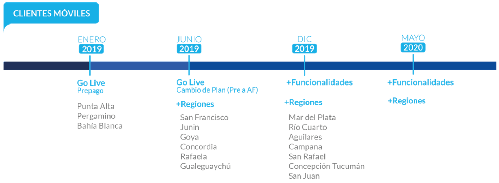

Veamos el siguiente video de Alejandra Delle Chiaie sobre la puesta en producción y las etapas del Programa.
Este proyecto se está desarrollando en etapas, sumando funcionalidades en nuevas localidades en cada uno de los lanzamientos: 